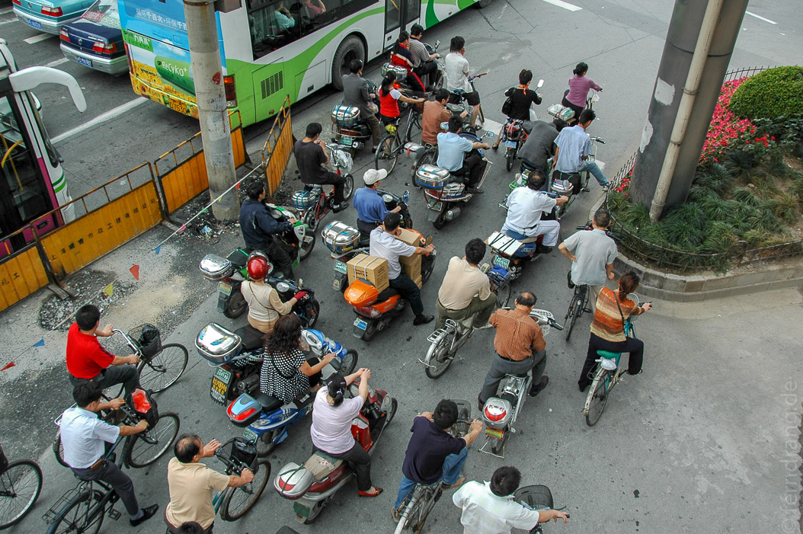
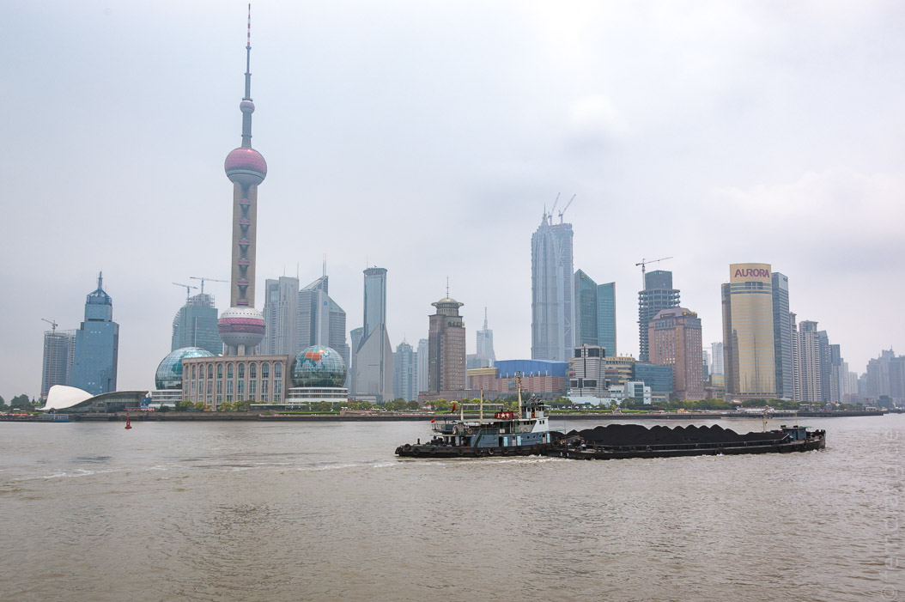
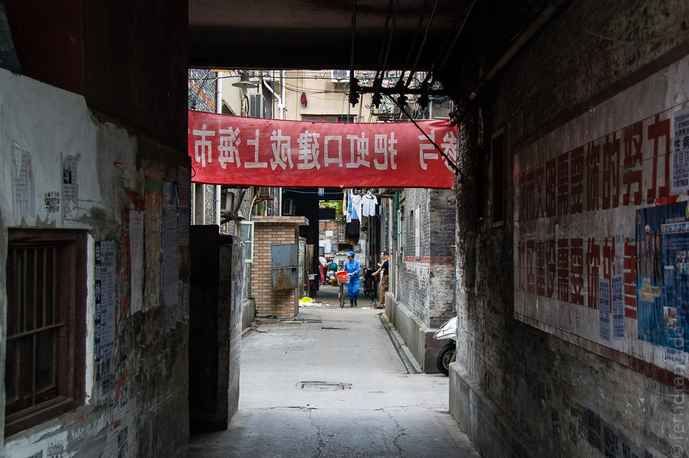

17/06/2007
Shanghai
Unser Aufenthalt in Shanghai hat mit der Fahrt vom Flughafen ins Zentrum begonnen. Die 32 km hat der (ex-)Transrapid in etwas weniger als 8 Minuten zurückgelegt. Das war beeindruckend.

In Shanghai wurden wir dann sofort von unserer Reiseleitung mit einem Haufen reisender Rentner in einen Kleinbus gepackt und ins Hotel gefahren. Dabei konnten wir einen ersten Eindruck der Stadt gewinnen, die eine seltsame Mischung aus chinesischer Großstadt, chinesischem Dorf und Autobahnen zu sein scheint.
Das Hotel war voll mit Gold-Kitsch. Die Zimmer waren aber sehr ordentlich. Wir haben uns die ganze Zeit gewundert, dass der Altersdurchschnitt unserer Mitreisenden deutlich über dem angekündigten Niveau lag. Das hatte aber auch einen gewissen Unterhaltungswert. Die leichten Gebrechen und Gehbehinderungen ließen uns erwartungsvoll an den Besuch des Mt Everests denken. Es hat sich dann allerdings herausgestellt, dass alle außer uns nur einen kurzen Lhasa-Aufenthalt gebucht hatten. Wir verbrachten also nur den ersten Tag und den Flug nach Lhasa zusammen.
In Shanghai sind wir natürlich den Bund entlang geschlendert und haben die verspielte Skyline von Pudong bestaunt, die ein Deja-vu von Simcity heraufbeschwor. Der Bund selbst mit seinen Prachtbauten von der Jahrhundertwende scheint das Gegenteil zu sein.
In der Altstadt haben wir uns durch einen Gang über die von Menschen überfuellte Zickzack-Brücke von bösen Geistern befreit. Direkt nebenan liegt der alte Yu-Garten, der "Wald und Berge in der Stadt" sein soll. Die vielen verwinkelten Bereiche mit unzähligen Teichen, Tümpeln, Brückchen und anderem Inventar, das man von alten, chinesischen Gärten erwartet, werden dem Ruf gerecht. 